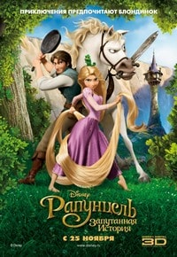

Найвідоміший рейтинг, мабуть, IMDb (Internet Movie Database). Це база даних по кожному фільмі на планеті, зараз на сайті їх більше чотирьох мільйонів. Рейтинг формується за оцінками користувачів. Причому алгоритм враховує не тільки саму оцінку, але кількість тих, хто проголосував: зазвичай для того, щоб потрапити в список потрібно набрати близько 25 000 голосів. Головне достоїнство IMDb в тому, що голосують тут люди з усього світу.
| Номер | Назва мультфільма | Рік випуску | Країна | Рейтинг |
|---|---|---|---|---|
| 1 | Король Лев | 1994 | США | 8.5 |
| 2 | Як приборкати дракона | 2010 | США | 8.2 |
| 3 | Рапунцель. Заплутана історія | 2010 | США | 7.8 |
| 4 | Волл.і | 2008 | США | 8.4 |
| 5 | Корпорація монстрів | 2001 | США | 8.1 |
| 6 | Льодовиковий період | 2002 | США | 7.6 |
| 7 | Шрек | 2001 | США | 7.9 |
| 8 | Мегамозок | 2010 | США | 7.3 |
| 9 | Тачки | 2006 | США | 7.2 |
| 10 | Історія Іграшок | 1995 | США | 8.3 |
